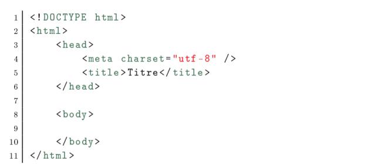

Le navigateur est le programme qui nous permet de voir les sites web. Le travail du
navigateur est de lire le code HTML et CSS pour afficher un résultat visuel à l'écran. Si votre
code CSS dit. Les titres sont en rouge, alors le navigateur affichera les titres en rouge. Le rôle
du navigateur est donc essentiel !
On ne dirait pas, mais un navigateur est un programme extrêmement complexe. En effet,
comprendre le code HTML et CSS n'est pas une mince aaire. Le principal problème, vous
vous en rendrez vite compte, c'est que les différents navigateurs n'affichent pas le même site
exactement de la même façon ! Il faudra vous y faire et prendre l'habitude de vérifier
régulièrement que votre site fonctionne correctement sur la plupart des navigateurs.
il existe de nombreux navigateurs différents. Voici les principaux à connaître :
Google Chrome : le navigateur de Google, simple d'emploi et très rapide.
C'est le navigateur que j'utilise au quotidien.
Compatibilité : Windows, Mac et Linux
Code web : 901626
Mozilla Firefox : le navigateur de la fondation Mozilla, célèbre et réputé. Je l'utilise
fréquemment pour tester mes sites web.
Compatibilité : Windows, Mac et Linux
Code web : 882142
Internet Explorer : le navigateur de Microsoft, qui équipe tous les PC
Windows. Je l'utilise fréquemment pour tester mes sites web.
Compatibilité : Windows
Code web : 577078
Safari : le navigateur d'Apple, qui équipe tous les Mac.
Compatibilité : Window s et Mac
Code web : 521278
Opera : l'éternel outsider. Il est moins utilisé mais propose de nombreuses
fonctionnalités. Compatibilité : Windows, Mac et Linux
Code web : 260892
Il est conseillé d'installer plusieurs navigateurs sur son ordinateur pour s'assurer que son site
fonctionne correctement sur chacun d'eux. De manière générale, je conseille de tester son site
web régulièrement au moins sur Google Chrome, Mozilla Firefox et Internet Explorer. Notez
que Safari et Google Chrome affichent les sites web quasiment de la même façon. Il n'est pas
forcément nécessaire de tester son site sur Safari et Google Chrome, même si c'est toujours
plus sûr
II- Vocabulaire du HTML
1- Balises et imbrication
Le langage HTML est un langage de balises. Il ne suffit pas d'écrire simplement du texte
dans l'éditeur, il faut aussi donner des instructions à l'ordinateur. En HTML, on utilise pour
cela des balises. Les balises se repèrent facilement. Elles sont entourées de chevrons,
c'est-à-dire des symboles < et >, comme ceci : < balise > À quoi est-ce qu'elles servent ? Elles
indiquent la nature du texte qu'elles encadrent. Elles veulent dire par exemple : Ceci est le
titre de la page, Ceci est une image, Ceci est un paragraphe de texte etc.
On distingue deux types de balises : les balises en paires et les balises orphelines.
a) les balises paires
Elles s'ouvrent, contiennent du texte, et se ferment plus loin. Voici à quoi elles ressemblent :
< titre>Ceci est un titre
On distingue une balise ouvrante (< titre>) et une balise fermante () qui
indique que le titre se termine. Cela signifie pour l'ordinateur que tout ce qui n'est pas entre ces deux
balises. . . n'est pas un titre.
b) les balises orphelines
Ce sont des balises qui s er vent le plus souvent à insérer un élément à un endroit précis
(par exemple une image). Il n'est pas nécessaire de délimiter le début et la fin de
l'image, on veut juste dire à l'ordinateur insère une image ici. Une balise orpheline s'écrit
comme ceci :
< balise />
Exple : < br/> : break retour à la ligne, < img />
c) les attributs
Les attributs sont un peu les options des balises. Ils viennent les compléter pour donner
des informations supplémentaires. L'attribut se place après le nom de la balise ouvrante
et a le plus souvent une valeur, comme ceci :
< balise attribut = " valeur " >
À quoi cela sert-il ? Prenons la balise < image /> que nous venons de voir. Seule, elle ne
sert pas à grande chose. On pourrait rajouter un attribut qui indique le nom de l'image à
afficher :
< image nom= " photo . jpg " />
L'ordinateur comprend alors qu'il doit afficher l'image contenue dans le fichier photo.jpg.
Dans le cas d'une balise fonctionnant par paire, on ne met les attributs que dans la balise
ouvrante et pas dans la balise fermante. Par exemple, ce code indique que la citation est de
Neil Armstrong et qu'elle date du 21 Juillet 1969 :
< citation auteur = " Neil Armstrong " date = " 21 / 07 / 1969 " >
C ' est un petit pas pour l ' homme , mais un bond de géant pour l 'humanité.
2- Structure de base d’un fichier HTML

Vous noterez que les balises s'ouvrent et se ferment dans un ordre précis. Par exemple, la
balise < html> est la première que l'on ouvre et c'est aussi la dernière que l'on ferme (tout à la
fin du code, avec < /html>). Les balises doivent être fermées dans le sens inverse de leur
ouverture. Un exemple :
- < html>< body>< /html> : correct. Une balise qui est ouverte à l'intérieur
d'une autre doit aussi être fermée à l'intérieur.
- < html>< body> : incorrect, les balises s'entremêlent